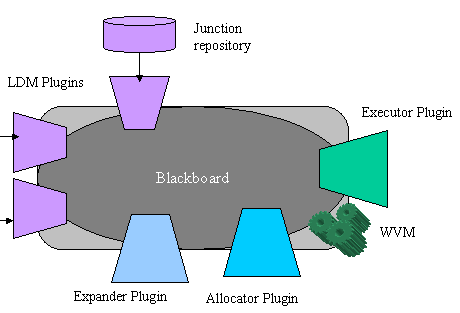
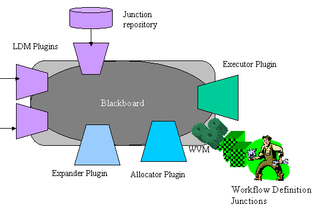
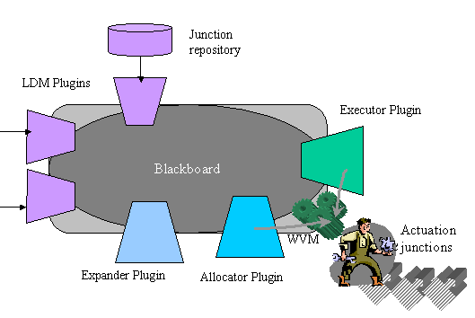
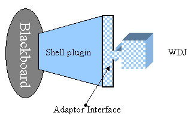

Workflakes provides a Cougaar-based workflow system
that is coupled with Worklets mobile agents and coordinates their remote
activities.
Current Version of Workflakes is 1.0
Dependencies:
-
Cougaar 7.x (migration to 8.x is under way) - see Cougaar.org
: Cougaar is an open-source Java-based decentralized coordination infrastructure
on top of which a workflow formalism can be implemented. Cougaar task processors
are called clusters. Multiple clusters can be distributed over a
network and communicate data among each other via a blackboard mechanism.
Furthermore, clusters contain and run collections of PlugIns. While
clusters are purely part of the infrastructure, plugins can provide application
logic to a society of clusters, i.e. describe and run the workflow
that follows under the responsibility of that society. There are a number
of "canonic" plugins to carry out most typical duties in a workflow, such
as:
-
manipulating data
-
publishing workflow tasks
-
expanding tasks in hierarchies of subtasks
-
allocating resources to tasks
-
planning the execution of the workflow over time
-
enacting and supervising it,
-
and so on.
Most canonical plugins are included in the Cougaar distribution. It is
the responsibility of the application programmer to specialize the Java
classes representing those plugins to augment it with the correct logic
for the workflow at hand. (For more information, see the extensive Cougaar
training
material )
-
Worklets - see PSL labs
at Columbia University: Worklets is a Java-based mobile agents platform.
A Worklet is a mobile container of code snippets named worklet junctions,
which travels from host to host and deposit a junction at each spot. Deposited
junctions are executed by Worklet Virtual Machines ({@link
psl.worklets.WVM WVMs}) residing on the target hosts.
The Workflakes application exploits Worklets in conjunction with Cougaar
in two fundamental ways:
-
To define and upload a workflow dynamically onto an existing Cougaar society.
Workflakes includes a set of Workflow Definition Junctions (WDJs)
- i.e. special-purpose worklet junctions that can be shipped on board of
worklets to a Cougaar cluster, to provide behavior and logic to shell
plugins. The base class for WDJs is {@link psl.workflakes.coolets.CooletIncomingJunction}.
Shell
plugins are another peculiarity of Workflakes: they are specialization
of Cougaar basic plugin class, which expose some interfaces devoted to
all of the main duties in a workflow system (see above) but with no internal
logic. The base class for shell plugins is {@link psl.workflakes.coolets.WorkletPlugIn}.
Shell
plugins can accommodate and run WDJs that match their interfaces. This
way WDJs can inject logic in a cluster from the outside, which leads to
ease of reuse and evolution of the workflow. It is noticeable that - in
principle - WDJs can be uploaded onto a community either with a push or
a pull paradigm. Push is currently favoured, although a primitive library
to support ontology-based detection and pull of WDJs from a factory had
been implemented as {@link psl.workflakes.smartinf the Smart Interface
package}, which is right now in practice deprecated since
it's not up to par with the rest of Workflakes and needs some serious restoration
work.
-
To execute work in the "real world". The workflow defined and executed
within a Cougaar society cannot have any side effects in the real world
unless we provide some computational capabilties that are able to carry
out the work symbolized by Workflow tasks (at least the hierarchy leafs).
Workflakes includes to this end Workflow Execution Junctions (WEJs,
also called Actuation junctions) - i.e. specialized worklet junctions that
can be associated to the definition of workflow tasks and then dispatched
from clusters onto external WVMs for executing there computations corresponding
to those workflow tasks. Such WVMs with the interfaces they expose to incoming
WEJs are maintained as internal information on the blackboard of the Workflakes
system.
For reference, most of the classes that implement shell plugins, their
interfaces, WDJs and WEJs and the related support facilities are included
in package {@link psl.workflakes.coolets} and its subpackages.
Notice that in case of the choice regarding actuators for Workflakes
is different from Worklets, the plugin-based architecture of Workflakes
cluster (see below) allows to substitute
Workflakes (and specifically WEJs) with another actuator technology at
little cost.
To learn to use Workflakes, it is strongly advised in the first place
to familiarize with Cougaar, and its main concepts, which include
nodes (Cougaar units of distribution ), clusters, plugins, assets
(for representing facts and resources), dynamic planning, PSP (for reporting
and communicating to the outside the state of the workflow) and so on.
An example of a small Workflakes society carrying out a simple workflow
is found in the package for {@link psl.workflakes.exercise.tutorial}, which
can be run as 2 communicating clusters, either running on the same Java
Virtual Machine (a Cougaar Node) or on 2 different JVMs.
Insight on Workflakes architecture
A typical Workflakes cluster appears as follows:

LDM plugins represent sources of facts and data exchanges with
the external world; among those, one represents the repository of WEJs
that are available to the cluster for dispatching as a response to given
workflow tasks. External world data may for example represent triggers
for a reactive workflow, once they are internalized into the blackboard
by the appropriate LDM plugin.
In the Workflakes distribution, an example of an LDM shell plugin is
provided, which allows to interface a cluster to the Siena
event bus in a flexible fashion, which is programmable with appropriate
WDJs.
Notice how a WVM is embedded in the cluster to allow docking of WDJs
(see Figure on the left below) and dispatching of
WEJs (handled in conjunction by AllocatorPlugIn and ExecutorPlugIn
on
the basis of the junction repository maintained by an LDM plugin- see Figure
on the right below ). For substituting WEJs with some other actuation
technology in Workflakes, it is sufficient to define new Allocator and
Executor plugins with appropriate capbilities and ad hoc logic.

Incoming WDJs can define many facets of the workflow, such as:
-
Tasks to be posted on the blackboard
-
Logic to extend posted tasks into Expansions, i.e. concatenations
of further (sub-)tasks (see {@link psl.workflakes.coolets.ExpanderJunction}
for the base class of WEJs defining expansion logic and {@link psl.workflakes.coolets.adaptors.ExpanderAdaptorInf}
for the base interface to be implemented by Expander plugins).
-
Information about the WEJs in the junction repository that can be associated
to workflow tasks for actuation (see {@link psl.workflakes.coolets.JunctionLDMPlugIn}
for the base class of LDM plugins handling WEJs )
-
Information on how to process incoming triggers with LDM plugins (see for
example {@link psl.workflakes.coolets.SienaLDMPlugIn} for the base class
of LDM plugins handling triggers coming from an external source such as
the Siena bus and {@link psl.workflakes.coolets.SienaLDMJunction} for the
base class of WDJs providing processing logic for incoming Siena triggers)
-
Policies that govern the assignment of WEJs to worklets and their dispatching
on board of worklets
-
etc.
Interactions between shell plugins and WDJs
It is noticeable the pattern with which a WDJ interacts with a shell plugin
to "fill" it with some workflow logic. First of all, the code of each WDJ
must be developed against a certain adaptor interface and an incoming
WDJ expects the shell plugin to expose the appropriate adaptor.
The code injected into a plugin by a WDJ has three main parts:

-
Initialization: any set of computations that needs to be carried out immediately
when the junction arrives
-
Subscriptions: the junction can operate subscriptions onto the Cougaar
blackboard on the behalf of the plugin
-
Callbacks: the junctions define behaviors to be executed as soon as the
blackboard subscriptions are matched and the control is given to the plugin
in order to manipulate the matching elements of the blackboard.
Multiple WDJs can therefore be active at the same time within a plugin,
each with its own set of subscriptions and callbacks.
Basic types adaptor interfaces for the most common types of shell plugins
are found in the {@link psl.workflakes.coolets.adaptors} package.